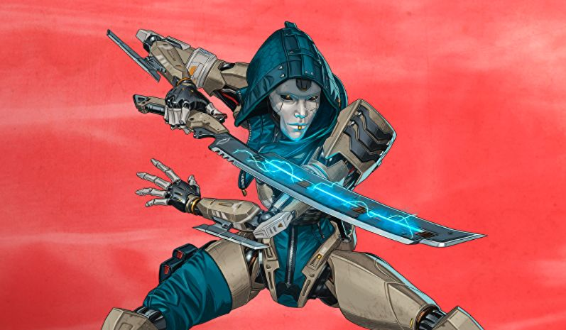

Apex Legends Fan Page
About Apex Legends
Developed by Respawn Entertainment and published by EA, Apex Legends came out in February of 2019. There are currently 19 different playable characters, with more coming out soon, as well as 4 different maps for Battle Royale that are constantly updated.
History
Respawn first developed Titanfall back in 2011 for the Xbox which set the baseline for the next game, Titanfall 2. Titanfall 2 was available on all platforms and is still very popular, it even has community run servers in the form of the Northstar Client. Most of the abilities of Apex's characters, or even the characters themselves (example being Ash) come from Titanfall 2. Titanfall 2 contained a campaign, as well as a multiplayer PvP/PvE mode. Apex Legends was developed after the success of other Battle Royales like Fortnite and other similar games. Titanfall 3 was originally in Development with a Battle Royale side mode, but Respawn ditched the rest of the game and went full force into Apex Legends.
"I am SO proud of myself" -Mirage
How To Play
- Gather a squad, play solo v. teams, or play with random players!
- Choose your Legends for your team
- Choose a drop spot, and wait for the Dropship to near the spot
- Stock up on loot or fight it out, depending on where you land.
- Survive as long as possible and finish off any squad you see
Recent Characters and their abilities
- Mad Maggie
- Passive: Highlights enemies on hit, and gives a speeed boost when using specific weapons
- Tactical: Fires a drill that engulfs and area behind cover on fire
- Ultimate: Rolls a wrecking ball towards the enemy, leaving small speed boosting pads on the ground
- Ash
- Passive: All enemy's elimination boxes are marked on the map, and allows you to find surviving attackers if you go to the box
- Tactical: Throws a ninja star that moves slowly through the air, that tethers enemies to surfaces for a few seconds
- Ultimate: Uses her sword to make a one-way portal to a location, that dissapears after a few seconds

- Seer
- Passive: Sense enemy heartbeats in an area in front of you
- Tactical: Sends out long cylinder that marks enemies for a long time through walls if it hits them, as well as shows their health to your team
- Ultimate: Throws a device out that creates a massive dome, that shows how many enemies are inside of it, and marks enemies that are running, walking, or using their weapons

All Characters
- Wraith
- Lifeline
- Gibraltar
- Mirage
- Caustic
- Bloodhound
- Octane
- Wattson
- Crypto
- Revenant
- Loba
- Rampart
- Horizon
- Fuse
- Valkyrie
- Seer
- Ash
- Mad Maggie
Battle Royale Maps
| King's Canyon |
|
| World's Edge |
 |
| Olympus |
 |
| Storm Point |
 |
Contact Others!
ApexFanLFG@fakemail.com
Phone Number: 00111010 01010000
Image Credits